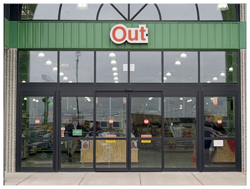

Our Door Systems
Every system is custom-configured for your opening. Standard, FBO, FSL, ADA, hermetic — all built to order and shipped direct.

Revolution Sliding Door
Our flagship DT-3000. Rod-and-bearing drive, I-beam header, DC motor — no track to jump, no programmer required. Bi-parting and single-slide configurations.
View specs & configurations →
All-Glass Sliding Door
Minimal header, maximum visual impact. Frameless glass panels for retail, hospitality, and corporate lobbies. Same proven drive system, frameless aesthetic.
View specs & configurations →
Hermetic / ICU Door
Full perimeter sealing for operating rooms, ICUs, cleanrooms, and pharmaceutical environments. Meets ASHRAE 170 and infection control requirements.
View specs & configurations →
Swinging Door
ADA-compliant automatic swing door operator for interior and exterior applications. Low-energy and full-power configurations. Ideal for retrofits.
View specs & configurations →